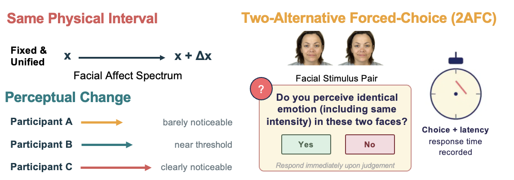
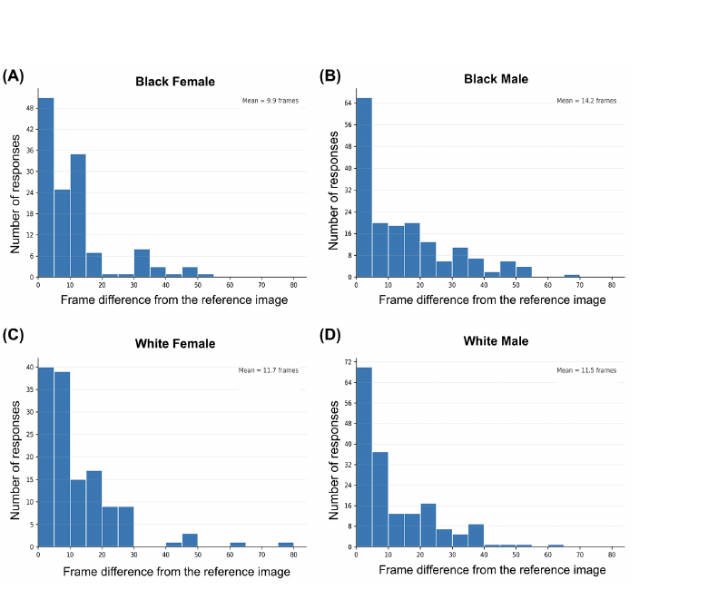
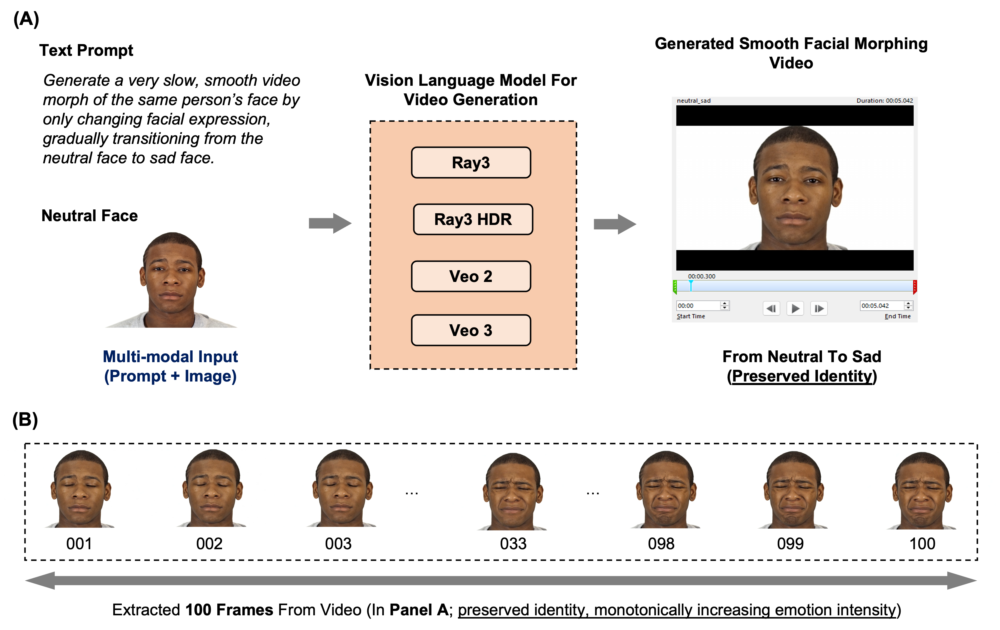
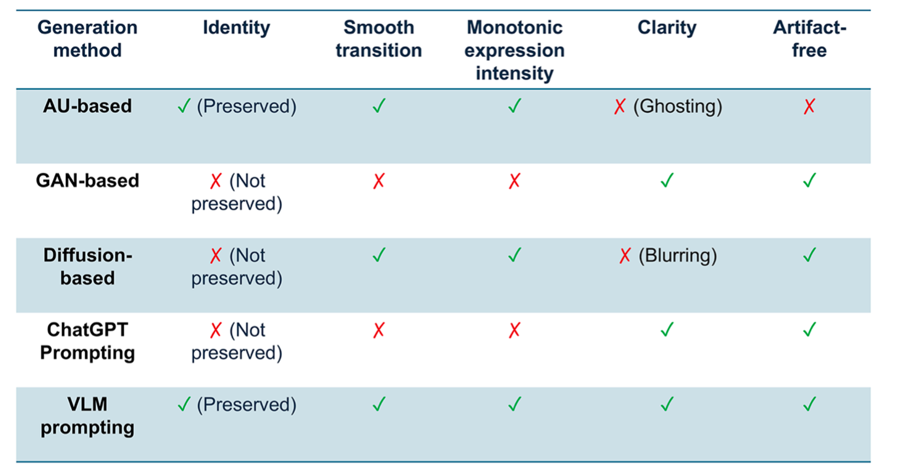
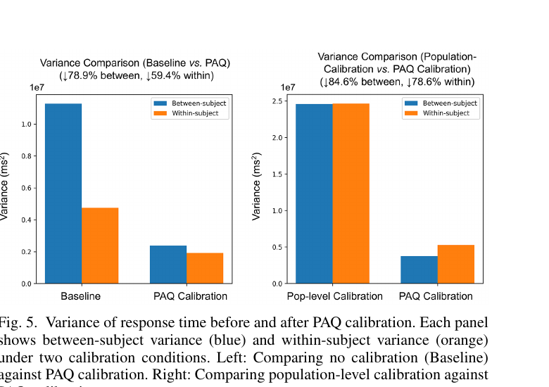
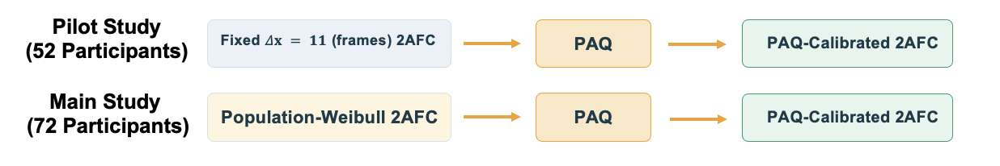
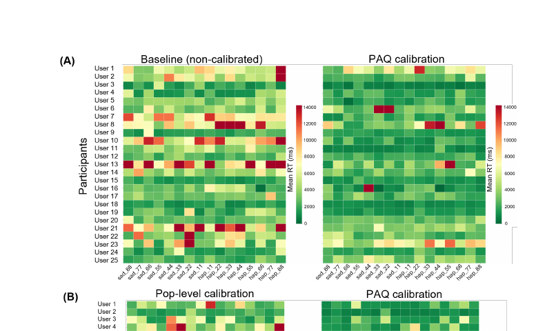

1Electrical and Computer Engineering, Georgia Institute of Technology · 2Industrial and Systems Engineering, Georgia Institute of Technology
2026 14th International Conference on Affective Computing and Intelligent Interaction (ACII)
Behavioral tasks measuring facial affect perception assume that identical stimuli impose equivalent perceptual difficulty across participants. However, this assumption is systematically violated by individual differences in perceptual sensitivity. Using an affective perception task as our testbed, we propose a framework to normalize for perceptual difficulty that directly estimates each participant's Just Noticeable Difference (JND) along the facial affect spectrum via cognitively lightweight perceptual adjustment queries (PAQs). We use these PAQ-inferred JNDs to re-express stimulus distances, constructing difficulty-equated tasks in perceptual space. We validate the framework in a Two-Alternative Forced-Choice (2AFC) task using two complementary behavioral measures: binary metacognitive difficulty judgments and response time variance decomposition. We find that PAQ calibration significantly equalizes perceived task difficulty at an individual level when compared to both the non-calibrated baseline and population-level Weibull calibration, while also reducing mean response time and between-subject variance in response time. These results establish PAQ as a principled and practical instrument for individualized perceptual calibration in facial affect recognition.
Listen: paper overview
A common way to study facial emotion perception is a two-alternative forced-choice (2AFC) task: participants view a pair of faces drawn from a facial affect spectrum and judge whether they express the same emotion at the same intensity — yes or no — while both their choice and response time are recorded.
These stimulus pairs are typically built from a fixed physical interval, Δx, applied identically to every participant. But perceptual sensitivity is not uniform: the same Δx that is barely noticeable to one participant sits right at another's threshold, and is unmistakably obvious to a third.

This directly confounds downstream science. In depression research, patients are thought to struggle more with happy faces than sad ones, measured by response time. But if our happy-face stimuli are simply harder to tell apart to begin with, regardless of who's looking, then every participant would be slower there — and we'd mistake that stimulus artifact for a clinical symptom.
Our goal in this paper is: how to mitigate such miscalibration in facial-recognition 2AFC tasks.
Listen: the 2AFC task and the miscalibration problem

Listen: the observation behind PAQ
A Perceptual Adjustment Query (PAQ) asks a participant to move a slider along a continuous stimulus path until it first looks different from a fixed reference, and where they stop defines their personal Just Noticeable Difference — recovered from a single interaction rather than many repeated trials. PAQ was originally introduced for low-rank metric learning by Xu et al., 2023; here we adapt it to facial affect calibration. We realize this in three steps.




Listen: method overview
Across 124 participants on Prolific, PAQ calibration was tested against both a non-calibrated baseline and a population-level Weibull calibration, using metacognitive difficulty judgments and response-time variance as evidence. PAQ calibration significantly increased the proportion of trials perceived as equally difficult, both relative to the non-calibrated baseline (one-sided exact McNemar test, p = 0.0004) and relative to population-level calibration (p = 0.0014). It also reduced mean response time by roughly 47% and cut between-subject response-time variance by 79– 85% relative to the two comparison conditions.

Listen: results walkthrough
Because participants complete PAQ calibration before the post-PAQ 2AFC task, they become more familiar with the stimuli, which the authors note as a possible ordering confound. A suggested remedy is to run calibration before both the baselines and PAQ-calibrated tasks. The framework also assumes each participant's perceptual function is monotone and well-approximated by a Weibull CDF, and its generalization to clinical populations (e.g., depression, autism spectrum disorder), other affective dimensions (arousal, dominance), and cross-cultural settings remains to be demonstrated.
Listen: limitations and future work
This work was supported in part by the National Center for Advancing Translational Sciences of the National Institutes of Health under Award Number UL1TR002378 and KL2TR002381, the National Science Foundation award CCF-2107455, and a Google Research Scholar Award. The authors thank Vivek Anand and Chris Rozell for helpful discussions. This experimental protocol was approved by the Institutional Review Board (IRB) under approval number IRB2025-1286.